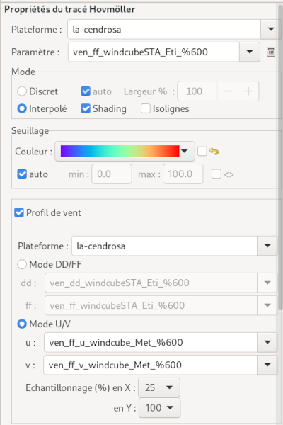
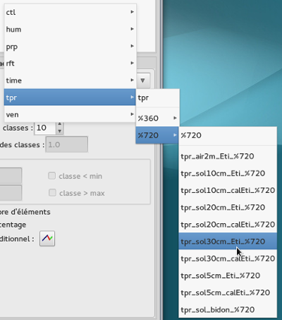
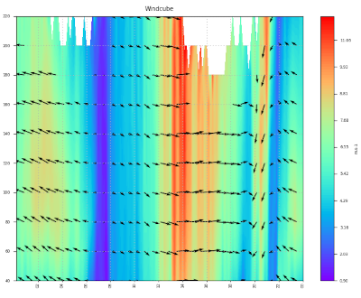

L'interface graphique
Configurer le contenu : configurer un tracé : configurer un tracé Hov
Configurer un tracé Hov

Utiliser l'info-bulle sur le nom des différents paramètres de configuration pour obtenir des informations.
Plateforme :
le menu déroulant de sélection de la plateforme propose un mode de sélection avancé. Pour cela, entrer la ou les premières lettres de la plateforme pour n'avoir que les plateformes correspondantes proposées, comme l'illustre l'image ci-dessous :

Paramètre :
le menu déroulant de sélection d'un paramètre se présente en cascade à 3 niveaux :
- famille : la famille AIDA à laquelle appartient le paramètre (tpr, hum, pre, ...).
- fréquence : la fréquence du paramètre avec la nomenclature AIDA (%60=1min, %720=12min, 20=20Hz, 50=50Hz).
- nom : nom du paramètre.
Noter : lorsque la liste des paramètres est très longue, on peut utiliser les touches de défilement des pages pour facilter la recherche.

Calculette :  cf § Opération sur les données.
cf § Opération sur les données.
Mode :
Vista propose 2 modes pour tracer les données :
- discret : la valeur d'un niveau est associée à la couche. En mode auto, toute la couche est coloriée, sinon, on peut donner la largeur de la zone coloriée. Cette largeur est donnée en pourcentage de la largeur maximale (intervalle minimal entre 2 niveaux).
- interpolé : interpolation de la couleur entre 2 niveaux de façon à avoir un champ continu. On peut également tracer/superposer des isolignes.
Seuillage :
- couleur : choix de palette avec inversion possible.
- seuillage auto : la palette couvre toute la gamme de valeurs, sinon on fixe les seuils minimum et maximum couverts par la palette.
- <> : affichage des valeurs hors gamme => les valeurs inférieures et supérieures aux seuils prennent respectivement la première et la dernière couleur de la palette.
Profil de vent :
Vista propose d'afficher des vecteurs de profil de vent sur un tracé Hovmöller comme l'illustre l'image suivante :

- Plateforme : choix de la plateforme des données de vent.
- Mode DD/FF : le calcul des vecteurs de vent se fait en utilisant la direction et la vitesse du vent.
- Mode U/V : le calcul des vecteurs de vent se fait en utilisant les composantes zonales du vent U et V.
- Echantillonnage : choix de la quantité de vecteurs de vent à afficher, pour optimiser la lisibilité du graphique.